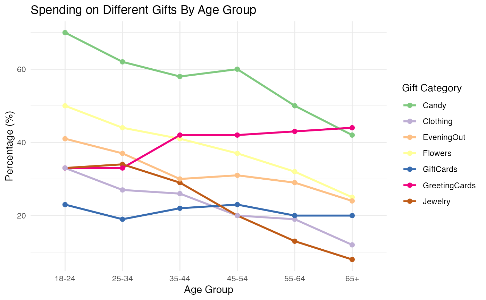

Valentine's Day Consumer Data
Valentinetrend.RmdThis package includes four datasets: gifts_age,
gifts_gender, historical_full_spending, and
historical_gifts_trends_percent_buying. These datasets show
annual trends in how people plan to celebrate Valentine’s Day over the
past decade, including total expected spending, average per-person
spending, and preferred gift types, broken down by age and gender.”
The data can be accessed by loading the Valentinetrend
and calling on the object gifts_age, or alternatively using
Valentinetrend::gifts_age if you want to analyse
Valentine’s Day spending trends by different age group.
library(Valentinetrend)
# Load the gifts_age dataset
head(gifts_age)
# Alternatively, use the full namespace
head(Valentinetrend::gifts_age)
library(Valentinetrend)
library(knitr)
library(ggplot2)
library(dplyr)
library(RColorBrewer)
library(tidyr)Example
Some examples analyses using the datasets are provided. You’ll learn how to perform basic data exploration and create visualizations by using this package!
Below, we use the historical_full_spending dataset to
create a combined bar and line chart showing total expected and average
per person spending from 2010 to 2022.
ggplot(historical_full_spending, aes(x = Year)) +
geom_bar(aes(y = PerPerson), stat = "identity", fill = "hotpink") +
geom_line(aes(y = total_expected_valentines_day_spending_in_billions * 10), color = "mediumvioletred", size = 1) +
geom_point(aes(y = total_expected_valentines_day_spending_in_billions * 10), color = "mediumvioletred", size = 2) +
geom_text(aes(y = total_expected_valentines_day_spending_in_billions * 10,
label = paste0("$", total_expected_valentines_day_spending_in_billions, "B")),
vjust = -0.4, color = "black", size = 3.6)+
labs(title = "Valentine's Day Spending Trends",
y = "Spending ($)") +
scale_fill_manual(values = c("Per Person Spend" = "hotpink")) + # Specify fill color for bars
scale_color_manual(values = c("Total Spend" = "mediumvioletred")) +
scale_x_continuous(breaks = historical_full_spending$Year) +
theme_classic()+
theme(plot.title = element_text(hjust = 0.5, size = 16),
legend.position = "none")+
annotate("point", x = 2014, y = -12, color = "hotpink", size = 3) +
annotate("text", x = 2015.1, y = -12, label = "Per Person Spend", size = 3, color = "black") +
annotate("point", x = 2017, y = -12, color = "mediumvioletred", size = 3) +
annotate("text", x = 2017.8, y = -12, label = "Total Spend", size = 3, color = "black") Create a separate section for each dataset, showing different analyses or visualizations.
Exploring the spending trends on gifts breaking down by age
The gifts_age dataset provides insights into spending
trends by different age groups. Here, we create a line chart to
visualize gift preferences among different age groups.
# Use pivot_longer to reshape the data
gifts_age_long <- gifts_age %>%
pivot_longer(cols = Candy:GiftCards,
names_to = "GiftCategory",
values_to = "Percentage")
# Create the line plot for gift categories
ggplot(gifts_age_long, aes(x = Age, y = Percentage, color = GiftCategory, group = GiftCategory)) +
geom_line(size = 1) +
geom_point(size = 2) +
labs(title = "Spending on Different Gifts By Age Group",
x = "Age Group",
y = "Percentage (%)",
color = "Gift Category") +
theme_minimal()+
scale_color_brewer(palette = "Accent")
Alternatively, you can create interactive charts using the
plotly package, as demonstrated in the Shiny app. You can
launch the app with Valentinetrend::launch_app() to explore
engaging interactive plots.
The above guide demonstrates how to use the
Valentinetrend package to analyze Valentine’s Day spending
trends. You can also explore additional datasets
(gifts_gender,
historical_gifts_trends_percent_buying) for further
insights.